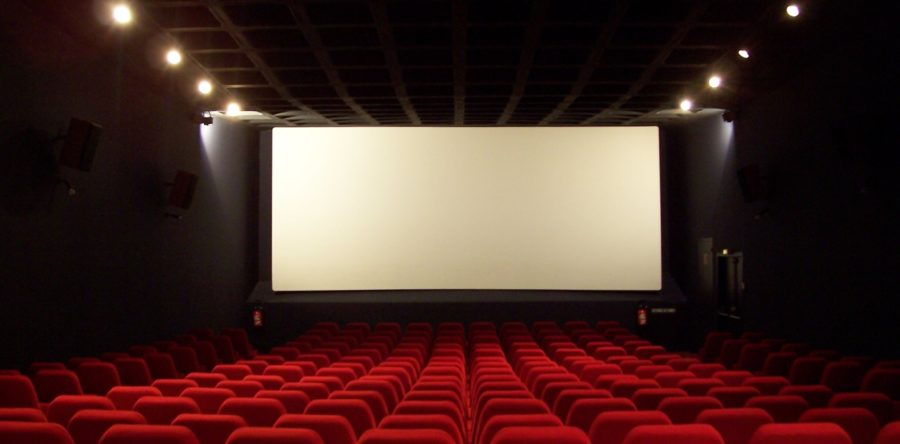

A filmszínház vagy közkeletűbb nevén mozi filmek nyilvános, nagyobb közönség előtti vetítésére alkalmas helyszín, többnyire egy épületen belül lévő termek csoportja vagy különálló épület, ritkábban szabadtéri mozi vagy egyszerűen szabadon álló vetítővászon, kivetítő. A többnyire homorúan emelkedő padlóra rögzített vagy mobil széksorokon, esetleg erkélyen helyet foglaló közönséggel szemben található a hatalmas vetítővászon, erre vetíti a vetítőgép a befűzött kópia képsorait. A 2000-es évektől egyre szélesebb körben terjed a digitális mozitechnika, amely szükségtelenné teszi a film fizikai forgalmazását-kezelését és így megoldást nyújt a kópiahiányra is.

Forrás
https://hu.wikipedia.org/wiki/Filmsz%C3%ADnh%C3%A1z>
https://hu.wikipedia.org/wiki/Filmsz%C3%ADnh%C3%A1z>